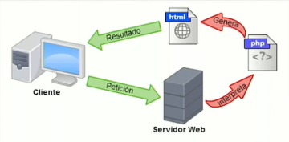
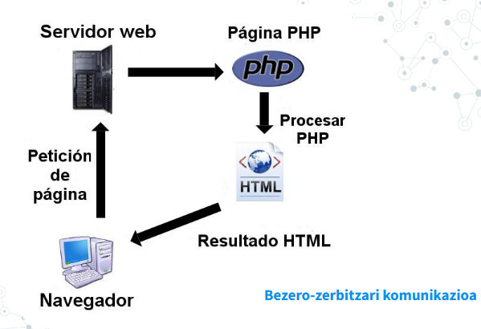

Web programazioaren ezaugarriak¶
Web orri bat deskargatzen dugunean, haren edukiak zehazten du pantailan agertuko dena (HTML).
Ondo egituratua badago, estilo-orria (CSS) izango du, orriaren atal bakoitzaren estiloa nabigatzaileari adierazteko.
Bezero–zerbitzari komunikazioari deitzen zaio, non bezeroak (nabigatzailea) eskaera (request) bidaltzen duen eta zerbitzariak erantzun (response) bueltatzen duen.

